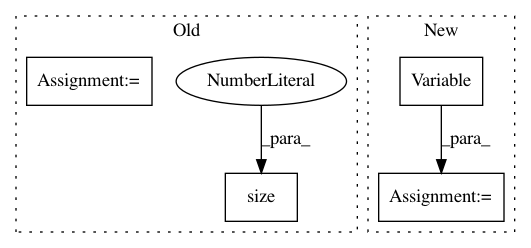

b87368e1e7fd832b505db9cc08015ac7af8f95de,VAE/main.py,,train,#Any#,94
Before Change
recon_batch_data, mu, logvar = model(batch_data)
loss = loss_function(recon_batch_data, batch_data, mu, logvar)
loss.backward()
loss = loss.data[0]
optimizer.step()
if i % 10 == 0:
print("Epoch: {} [{}/{} ({:.0f}%)]\tLoss: {:.4f}".format(
epoch,
i + BATCH_SIZE, training_data.size(0),
float(i + BATCH_SIZE) / training_data.size(0) * 100,
loss / BATCH_SIZE))
After Change
model.train()
train_loss = 0
for batch in train_loader:
batch = Variable(batch)
optimizer.zero_grad()
recon_batch, mu, logvar = model(batch)
loss = loss_function(recon_batch, batch, mu, logvar)
In pattern: SUPERPATTERN
Frequency: 3
Non-data size: 4
Instances
Project Name: OpenNMT/OpenNMT-py
Commit Name: b87368e1e7fd832b505db9cc08015ac7af8f95de
Time: 2016-12-23
Author: jvanamersfoort@twitter.com
File Name: VAE/main.py
Class Name:
Method Name: train
Project Name: OpenNMT/OpenNMT-py
Commit Name: b87368e1e7fd832b505db9cc08015ac7af8f95de
Time: 2016-12-23
Author: jvanamersfoort@twitter.com
File Name: VAE/main.py
Class Name:
Method Name: train
Project Name: OpenNMT/OpenNMT-py
Commit Name: b87368e1e7fd832b505db9cc08015ac7af8f95de
Time: 2016-12-23
Author: jvanamersfoort@twitter.com
File Name: VAE/main.py
Class Name:
Method Name: test
Project Name: OpenNMT/OpenNMT-py
Commit Name: 614c41e7f05d274991d95271c49a87af3fa2cf49
Time: 2017-12-22
Author: skywalker@postech.edu
File Name: onmt/Loss.py
Class Name: NMTLossCompute
Method Name: compute_loss